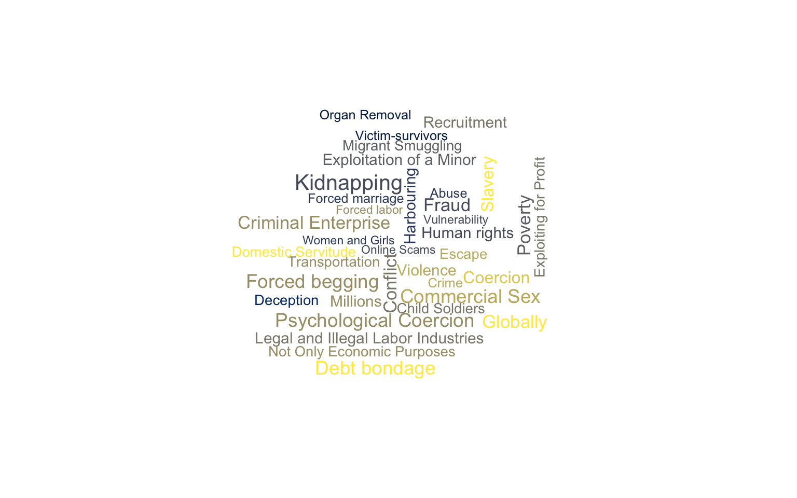
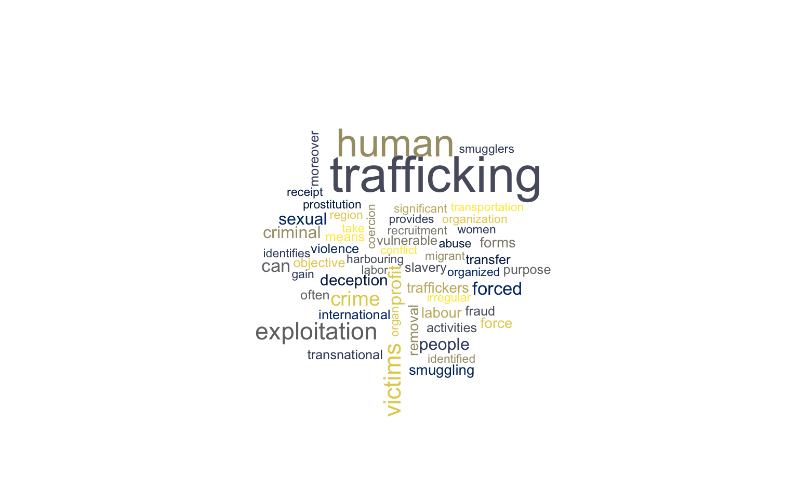
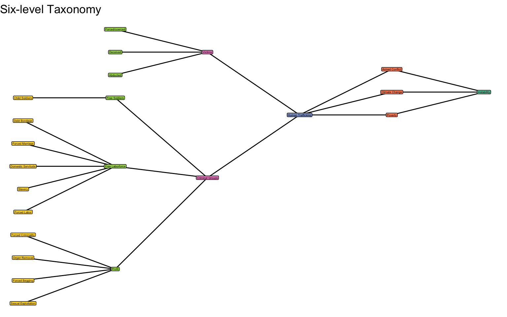

Now, let’s have a look at what is written on the website of The United Nations Office on Drugs and Crime. The UNODC is the UN office. On the webpage it states that “human Trafficking is the recruitment, transportation, transfer, harbouring or receipt of people through force, fraud or deception, with the aim of exploiting them for profit”. It is suggested that one of the main objectives of human trafficking is to gain profit, but it is not the only one. An important clarification is made later, highlighting that human trafficking is not region-specific or targeting a particular gender. It says: “Men, women and children of all ages and from all backgrounds can become victims of this crime, which occurs in every region of the world”.
The main tools are listed as violence and deception: “The traffickers often use violence or fraudulent employment agencies and fake promises of education and job opportunities to trick and coerce their victims”.
On the webpage three core elements that the crime of human trafficking consists of are written:
Further methods that are used by criminals to control their victims are provided: “Physical and sexual abuse, blackmail, emotional manipulation, and the removal of official documents”. Moreover, it is highlighted that no distinction is made between victims in their home countries and victims those among migrants, so migrant communities can also be the target of human traffickers.
Several forms can be identified:
Victims work “without pay or with an inadequate salary, living in fear of violence and often in inhumane conditions”.
Source of quotations above.
Now, let’s have a look what is written on the United Nations website about human trafficking. Following the Protocol definition, it states that human trafficking is “the recruitment, transportation, transfer, harbouring, or receipt of individuals”. It is reminded that the motives may not be purely economic. It is believed that victims become trapped in human trafficking chains because of four main factors:
The UN identifies five common forms of exploitation:
It is highlighted the transnational nature of human trafficking. It is noted that “global trafficking patterns have become increasingly transnational, with African victims representing a significant portion of international trafficking flows, especially to Europe and the Middle East”.
Moreover, it is recommended to consider the aggravated conditions created by armed conflicts that facilitate human trafficking activities. On the website it is written: “Factors such as armed conflict, displacement, and climate change have exacerbated vulnerabilities, particularly in Africa, where trafficking for both labour and sexual exploitation remains a significant issue”. Africa is considered to be the region most vulnerable to human trafficking.
Source of quotations above.
On another webpage the most important facts to know about human trafficking are listed:
Source of quotations above.
The European Union Agency for Law Enforcement Cooperation (Europol) provides another perspective, since it is not the UN office. On its webpage it is stated that human trafficking is “a serious crime that abuses people’s fundamental rights and dignity” and “involves the criminal exploitation of vulnerable people for the sole purpose of economic gain”. It is suggested that profit might be the main purpose of human trafficking. Human trafficking is also compared to “a modern form of slavery”.
Moreover, no distinctions are made based on regions and genders. It says: “It is often transnational in character and its victims are of both genders and all ages”. Human trafficking can be accompanied by other criminal offenses: “prostitution, irregular migration, property crime or even labour disputes”. Finally, human trafficking is distinguished from people smuggling, because “the individuals who pay a smuggler in order to gain illegal entry to a country do so voluntarily”.
Trafficking can take various forms and may involve:
Source of quotations above.
The International Criminal Police Organisation (Interpol) provides yet another perspective. On its webpage the difference between trafficking and smuggling is made. It says: “While there is a clear distinction between human trafficking and migrant smuggling, they can also be linked”. Several specific purposes for human trafficking are listed:
The clear difference between smugglers and traffickers is not provided on the webpage, because smugglers may also force people to perform activities they demand. It says: “Migrant smugglers take advantage of people who want to leave their home countries to escape poverty, conflict, and crises, or simply want to seek a better life”. Despite the voluntary nature of smuggling, irregular migrants “are often exposed to significant risks, including that of being trafficked, kidnapped or dying in transit to their destinations”.
Source of quotations above.
The main objective of human trafficking is suggested being to generate profit. It says: “Organised criminal groups take advantage of the most vulnerable people for profit, with a complete disregard for human safety and dignity”. Moreover, the profitability of this type of criminal activity that drives many individuals to participate in trafficking activities. It says is highlighted: “Human trafficking and migrant smuggling are low-risk, high-profit criminal businesses that employ increasingly sophisticated methods and technological means to expand their reach”. These crimes are also linked to other crimes:
Source of quotations above.
The Protocol to Prevent, Suppress and Punish Trafficking in Persons, Especially Women and Children (commonly known as the Palermo Protocol) was adopted by the UN General Assembly in 2000 as a supplement to the United Nations Convention against Transnational Organised Crime. It has provided the first internationally agreed definition of human trafficking, emphasising prevention, victim protection, and prosecution of traffickers. The Palermo Protocol urges states to criminalise trafficking, safeguard victims’ rights, and promote international cooperation against this global crime. It entered into force in 2003 and remains a cornerstone of international anti-trafficking law. The Palermo Protocol provides the following definition of human trafficking.
It says: “Trafficking in persons shall mean the recruitment, transportation, transfer, harbouring or receipt of persons, by means of:
The main objective is defined as “to achieve the consent of a person having control over another person, for the purpose of exploitation”.
The term exploitation includes, at a minimum:
Source of quotations above.
Victims Worldwide Who Are Women & Girls And Trafficked for Sexual Exploitation in 2020-2023
67060
Victims Worldwide Reported to UN in 2020-2023
202478
Percent of Victims Worldwide Who Are Women & Girls in 2020-2023
61%
Estimated Number of Victims Worldwide by ILO in 2022
50 mln



Forced labour and domestic servitude involve coercing individuals to work against their will through threats, violence, or abuse of power. In conflict settings, displaced populations and civilians under occupation are at heightened risk as economic collapse and insecurity make them vulnerable to exploitation. Armed groups and military forces may compel civilians to perform construction, logistics, or household tasks, blurring the line between labour and forced servitude. Such practices violate international humanitarian and human rights law, including prohibitions on slavery and forced labour in armed conflict.
Sexual exploitation refers to coercive or deceptive acts where individuals are abused for sexual purposes in exchange for goods, protection, or survival. During armed conflicts, sexual violence is frequently weaponized to terrorise populations, displace communities, or reward combatants. The breakdown of law enforcement and displacement of civilians often expand trafficking networks that profit from sexual exploitation. It is recognised as both a form of gender-based violence and a potential war crime under international law.
Forced criminality occurs when victims are compelled to engage in illegal activities, such as drug trafficking, theft, or armed operations, under threat or coercion. In conflict environments, armed groups may exploit civilians to sustain their operations or shield themselves from prosecution. Children and displaced persons are particularly vulnerable to such recruitment or coercion. International humanitarian law prohibits the use of civilians for military or criminal purposes, viewing these acts as grave violations of human rights.
Forced marriage involves compelling an individual, often a woman or girl, to enter into marriage without consent. In armed conflicts, it is frequently used as a tactic of control, sexual slavery, or social domination by combatants or occupying forces. Such practices can serve to legitimise long-term sexual exploitation or consolidate power over affected populations. Under international law, forced marriage constitutes a violation of personal autonomy and may amount to a crime against humanity when widespread or systematic.
Forced begging is the exploitation of individuals, often children or persons with disabilities, to solicit money or goods for the benefit of traffickers. In wartime, economic collapse and displacement drive vulnerable populations into dependency, making them targets for organised exploitation. Armed actors or criminal networks may use begging rings to finance operations or conceal other illicit activities. The practice violates international protections of human dignity and the prohibition of slavery-like practices.
Trafficking for organ removal entails coercing or deceiving victims into surrendering organs for transplantation or medical trade. During or after armed conflicts, the scarcity of medical resources and collapse of governance create fertile ground for such crimes. Combat injuries and humanitarian crises can be exploited by traffickers posing as medical intermediaries. International law classifies organ removal under coercion as a severe violation of bodily integrity and human rights.
Debt bondage arises when individuals pledge labour or services to repay a debt but are trapped in endless servitude due to unfair conditions or manipulation. In conflict zones, displaced or impoverished people may incur debts for basic survival, which traffickers then exploit. Such arrangements often blur into forced labour or sexual exploitation. International conventions recognise debt bondage as a contemporary form of slavery, which should be eradicated even during armed conflicts.
The use of child soldiers involves the recruitment or use of persons under 18 in armed forces or groups, whether in combat or support roles. Armed conflicts create conditions of desperation and manipulation that facilitate such recruitment. Children may be abducted, indoctrinated, or forced into participation through violence and fear. This practice is explicitly prohibited by international humanitarian law and the Convention on the Rights of the Child’s Optional Protocol on armed conflict.
Perpetrators of human trafficking in conflict settings are often driven by a mix of economic, strategic, but also ideological motives. Armed groups may exploit trafficking to obtain free labour to generate profit and recruit forced soldiers to sustain their military operations. In some cases, trafficking becomes a substitute for lost economic activity, turning human beings into commodities of war. The instability and weak law enforcement typical of conflicts create impunity, making trafficking an attractive and low-risk enterprise for criminals.
Victims of human trafficking rarely give genuine consent. Many are deceived through false promises of work or safety, while others are coerced through physical violence and psychological manipulation. In conflict environments, displacement and poverty amplify vulnerability, making it easy for traffickers to exploit individual desperation. Even when individuals appear to agree to work or travel, their “consent” is often a survival mechanism under conditions of threat or coercion.
Please read the following survival stories
The international community has launched multiple initiatives to combat human trafficking. The UN Office on Drugs and Crime (UNODC) leads the implementation of the Palermo Protocol (2000), which defines trafficking and promotes global cooperation. Another important document is the United Nations Convention Against Transnational Organized Crime (UNTOC).
The International Organisation for Migration (IOM) runs programs assisting victims and strengthening state capacities, while the International Labour Organisation (ILO) targets forced labour in supply chains. Other efforts include the UN Global Action to Prevent and Address Trafficking in Persons (GLO.ACT) and the Blue Heart Campaign. Together with regional instruments such as the Council of Europe Convention on Action against Trafficking in Human Beings (2005), these initiatives aim to reduce impunity, protect victims, and enhance cross-border coordination.
Please take a look at the following Interpol’s projects that tackle human trafficking and migrant smuggling
Uncovering trafficking crimes during armed conflicts requires careful monitoring of recruitment patterns and informal labour systems. Investigators must look for indicators such as forced conscription or sexual exploitation linked to military groups. Humanitarian actors, journalists, and local NGOs often become first responders in documenting abuses when state structures collapse. Intelligence sharing between peacekeeping missions, international organisations, and local civil societies is essential to expose these hidden human trafficking networks.
Prevention in conflict environments depends on early warning systems and community resilience. Strengthening legal protection for refugees and internally displaced persons helps reduce vulnerability to traffickers. Peacekeeping operations can include specialised units to monitor trafficking risks, while humanitarian agencies should integrate anti- trafficking training for field staff. Long-term prevention also requires addressing economic deprivation and the culture of impunity that allows such crimes to thrive.
Assessing and forecasting human trafficking in conflicts requires combining qualitative field data with quantitative models of displacement and armed group activity. Researchers can track indicators like sudden labour shortages, population movements, or reports of abduction to predict hotspots. Studying patterns from previous conflicts helps identify the socio-political conditions that make trafficking profitable or strategically useful. Predictive analysis aids prevention and supports targeted humanitarian interventions, as well as post-conflict recovery planning.